처음 하는 말,
오래 간직할 순간
“엄마”에서 “아빠 자동차 타자!”까지. 말모아는 부모와 보호자가 아이의 말과 그날의 목소리를 직접 모아 두는 언어 성장 기록장입니다.
Android · Google Play 출시 · 무료회원가입 없음 · 기록과 목소리는 내 기기에만 저장
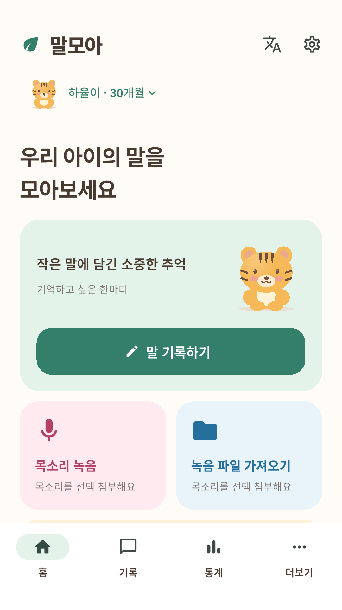
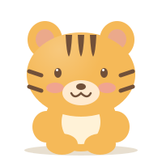
한 단어가 문장이 되기까지,
그 길을 모아 두세요
아이가 한 말을 단어, 표현, 문장으로 나누어 남기면 말이 자라는 모습이 차곡차곡 쌓입니다.
- 단어
엄마
처음 또렷하게 들린 그 한 단어. 말한 날짜와 상황을 메모와 함께 남겨요.
- 표현
더 주세요
자주 쓰는 말버릇과 짧은 표현도 따로 모아 볼 수 있어요.
- 문장
아빠 자동차 타자!
처음 이어 말한 문장은 그날의 목소리와 함께 간직해요.
기록은 쉽게, 정리는 말모아가
기억나는 그대로
바로 적어요
아이가 한 말을 그대로 입력하고 종류와 언어를 고르면 끝. 날짜를 몰라도 기록할 수 있어요.
- 단어·표현·문장 구분과 상황 메모
- 정확한 날짜가 없으면 ‘날짜 모름’, ‘예전부터 하던 말’
- 소중한 기록은 즐겨찾기로 간직하기
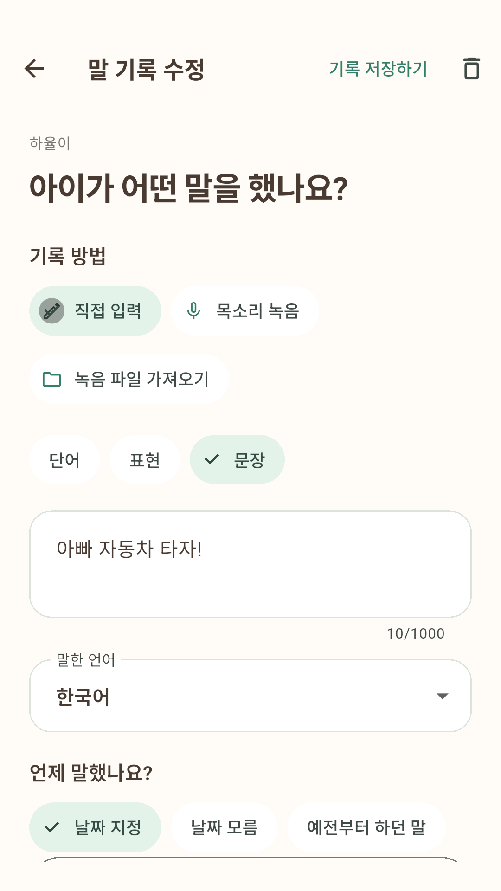
우리 아이만의
단어사전
직접 등록한 단어가 언어별로 모여 아이만의 사전이 됩니다. 같은 말을 다시 적으면 중복을 알려 주고, 반복해서 들은 기록을 함께 보여 줘요.
- 언어별 필터와 단어·메모 검색
- 같은 아이·같은 언어의 중복 단어는 하나로 정리
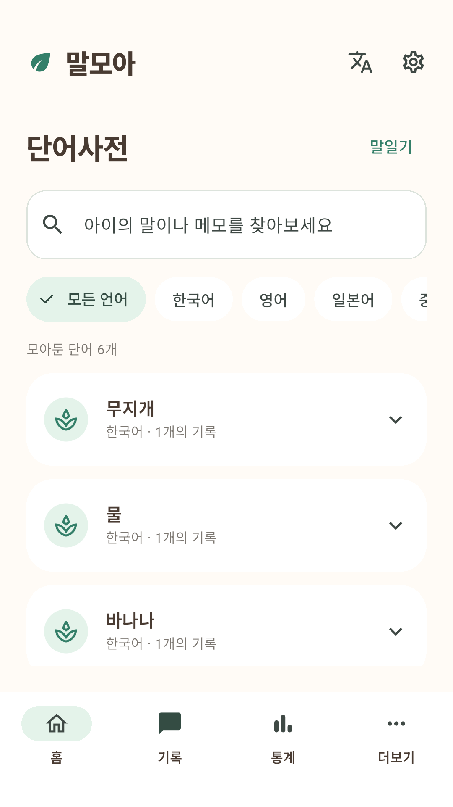
그날의 목소리도
함께 간직해요
앱에서 바로 녹음하거나, 휴대폰에 저장해 둔 녹음 파일을 가져와 기록에 붙일 수 있어요. 바쁠 땐 목소리만 먼저 남기고 글은 나중에 적어도 돼요.
- 한 번에 최대 10분 녹음, 화면이 잠겨도 이어서 녹음(선택)
- 기존 녹음 파일 가져오기
- 음성은 자동으로 글자로 바꾸지 않고 그대로 보관
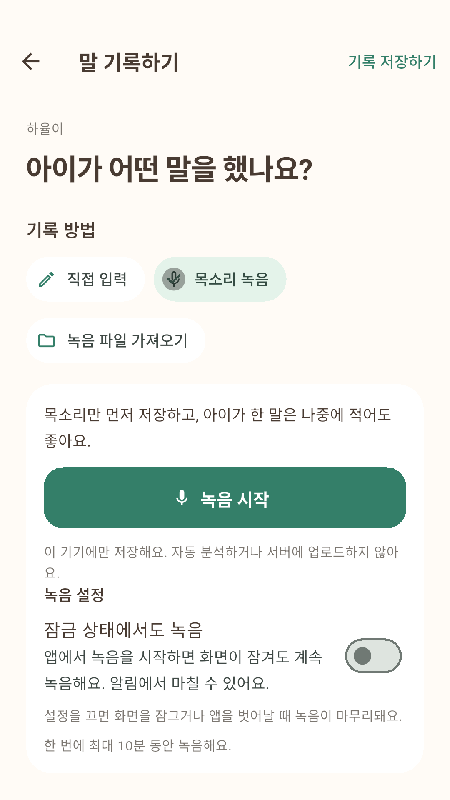
자라는 말을
한눈에 봐요
월별로 늘어나는 단어 수와 단어·표현·문장 기록 현황을 확인하세요. 통계는 보호자가 남긴 기록만으로 계산합니다.
- 단어 수는 아이가 그 말을 처음 한 날을 기준으로 집계
- 목소리만 저장한 기록은 단어 수에 더하지 않아요
- 종류별·언어별 기록 현황
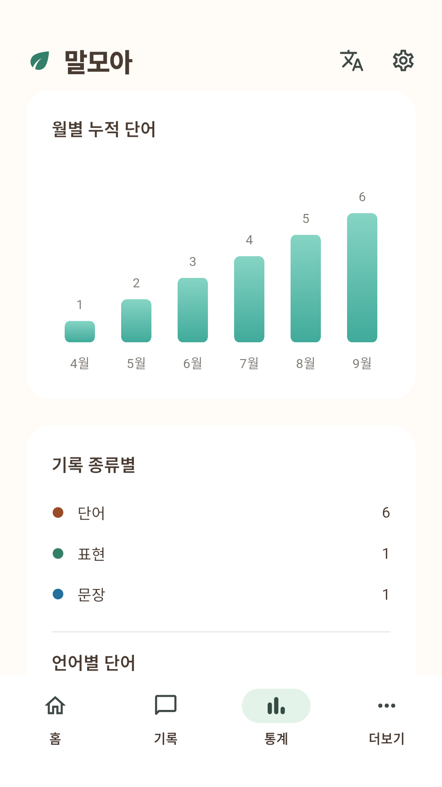
매일 쓰기 좋게 작은 것까지
-
아이별 기록장
여러 아이의 프로필을 따로 만들고 쉽게 전환해요. 개월 수도 함께 보여 줘요.
-
다국어 가정도 함께
한국어·영어·일본어 화면을 지원하고, 아이가 한 말은 6개 언어 중에서 골라 기록해요.
-
기록 알림
정한 요일과 시간에 새로 한 말을 적도록 알려 드려요. 그날 이미 기록했다면 알리지 않아요.
-
날짜별 기록 목록
지금까지 남긴 말을 날짜순으로 넘겨 보고, 종류와 언어로 걸러 찾아요.
-
텍스트 기록 내보내기
아이 정보와 직접 쓴 기록을 JSON 파일로 저장해 따로 보관할 수 있어요.
-
저장 전에 닫혀도 안심
녹음을 마치고 기록을 저장하기 전에 앱이 닫혀도, 다음에 열면 그 녹음을 다시 찾아 드려요.
사진 대신, 귀여운 띠 캐릭터로
아이 사진을 올릴 필요 없어요. 태어난 해로 12지 동물을 추천하고, 좋아하는 동물로 바꿔도 좋아요.
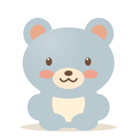
쥐- 소
- 호랑이
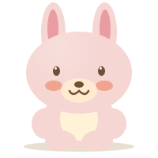
토끼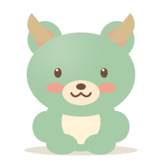
용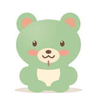
뱀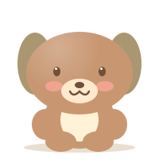
말
양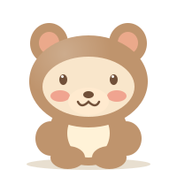
원숭이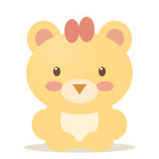
닭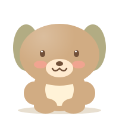
강아지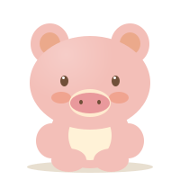
돼지
말모아를 미리 둘러보세요
실제 Android 앱 화면입니다. 화면 속 아이와 기록은 예시로 만든 가상 정보예요.
홈기록하기, 목소리 녹음, 녹음 파일 가져오기를 한 곳에서 기록하기아이가 한 말과 언어, 관찰 날짜를 입력 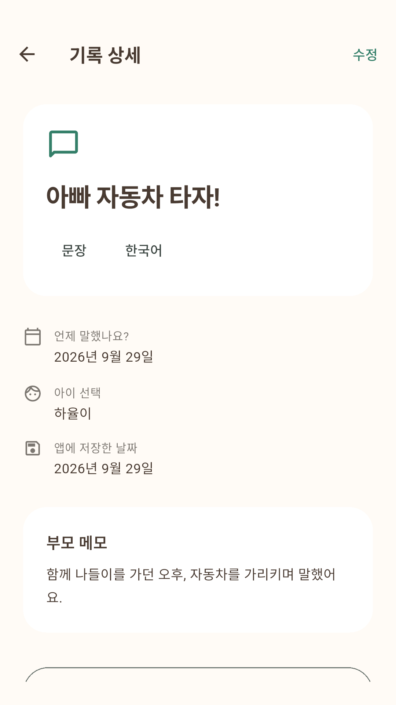
기록 상세말한 날짜와 보호자의 메모를 함께 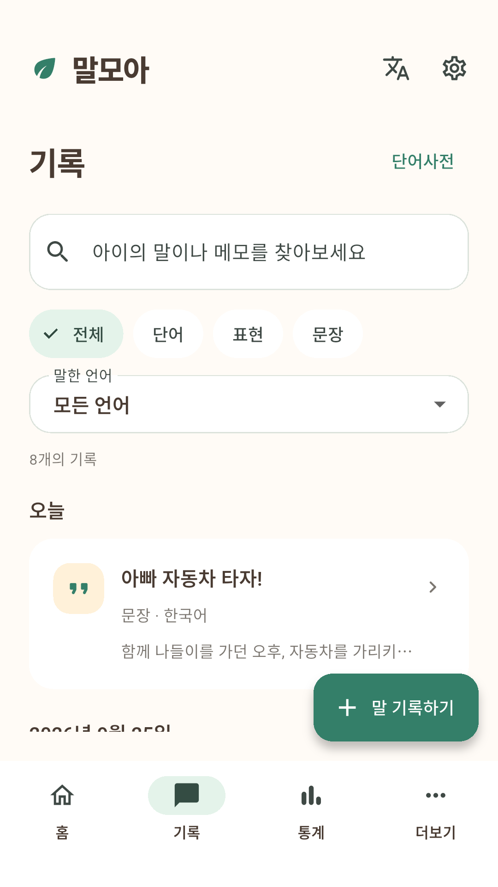
기록 목록단어·표현·문장을 종류와 언어로 찾아보기 단어사전언어별로 모아보는 우리 아이 단어 통계월별 누적 단어와 종류별 집계 목소리 녹음잠금 상태 녹음은 원할 때만 켜기 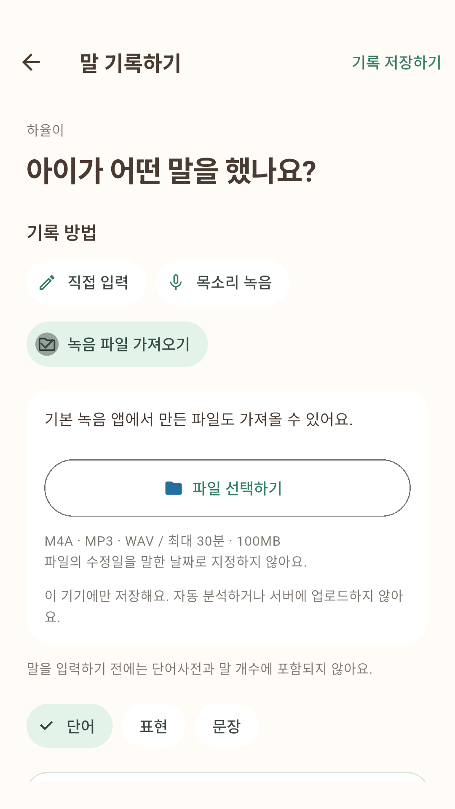
파일 가져오기휴대폰에 있던 녹음 파일을 기록에 첨부
옆으로 넘겨 더 보기 →
아이의 말은
이 기기 안에만 저장됩니다
말모아에는 회원가입이 없고, 개발자는 기록을 받는 서버를 운영하지 않습니다.
-
가입 없이 바로
계정, 이메일, 전화번호 없이 설치하고 바로 기록해요. 별명만으로도 충분해요.
-
서버로 보내지 않아요
기록과 음성은 기기에만 저장되며 개발자나 제3자와 공유하지 않아요.
-
누를 때만 녹음
마이크는 녹음 버튼을 누를 때만 사용해요. 권한이 없어도 직접 입력은 가능해요.
-
자동 분석 없음
음성 전사, 발음 평가, AI 요약을 하지 않아요. 보호자가 적은 그대로 보관해요.
알아 두세요
- 기기에만 저장되므로 앱 삭제·앱 데이터 초기화·기기 분실 시 기록을 복구할 수 없어요. 텍스트 내보내기에는 음성 파일이 포함되지 않아요.
- 가족 간 동기화와 클라우드 백업은 아직 제공하지 않아요.
- 홈과 통계 화면에 배너 광고가 있어요. 광고 SDK는 광고 표시를 위해 기기 정보를 처리할 수 있어요.
- 말모아는 기록을 돕는 도구이며 언어발달 검사, 진단 또는 치료를 제공하지 않아요.
자주 묻는 질문
무료로 쓸 수 있나요?
네. 모든 기능을 무료로 사용할 수 있으며, 홈과 통계 화면에 배너 광고가 표시됩니다. 현재 유료 결제 기능은 없습니다.
언제, 어디서 받을 수 있나요?
Android 기기에서 Google Play로 받을 수 있습니다.
아이폰에서도 쓸 수 있나요?
현재는 Android 앱으로 먼저 준비하고 있습니다. iOS 버전 일정은 아직 정해지지 않았습니다.
가족과 함께 기록할 수 있나요?
아직은 지원하지 않습니다. 기록과 음성은 사용 중인 기기에만 저장됩니다. 정보가 기기 밖으로 나가는 기능을 추가할 때는 개인정보처리방침을 먼저 개정하고 앱에서 안내합니다.
기록을 백업할 수 있나요?
더보기의 ‘텍스트 기록 내보내기’로 아이 정보와 직접 쓴 기록을 JSON 파일로 저장할 수 있습니다. 음성 파일은 내보내기에 포함되지 않으니 중요한 녹음은 따로 보관해 주세요.
목소리를 글자로 바꿔 주나요?
아니요. 말모아는 보호자가 직접 적는 기록장입니다. 음성은 자동으로 전사하거나 분석하지 않고 녹음한 그대로 보관하며, 음성만 저장한 기록은 단어 수에 더해지지 않습니다.
아이의 언어 발달 수준을 알려 주나요?
아니요. 말모아의 통계는 보호자가 남긴 기록을 모아 보여 줄 뿐, 언어발달 검사·진단·치료를 제공하지 않습니다. 발달이 걱정된다면 전문가와 상담해 주세요.